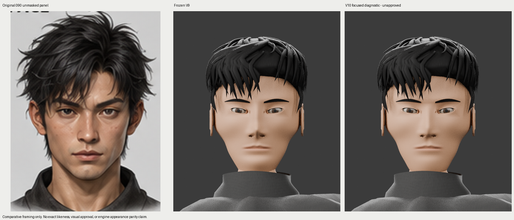
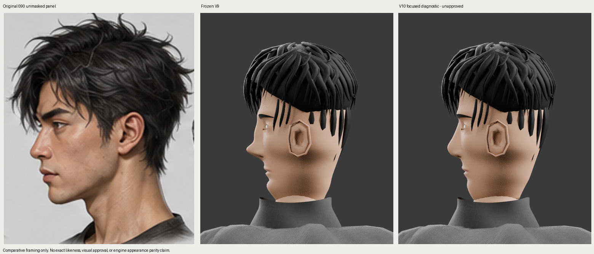

Actual reference090 pixels, frozen V9 and actual Blender CPU V10 renders. Facial likeness and hair fidelity remain below the source. No full pose review or GPU appearance certification.
Changes and remaining failures · Frozen source/export/render hashes · Preserved authoring functions

